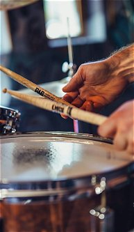

The Drums provide beats to songs and add rhythm which can change the feel of songs drastically. Drums can also add a bunch of energy to a song. In some Jazz, the drum kit is used to support the other instruments and keep everyone in time while adding more rhythm and energy.
Overall, drums are very much a support instrument and have always been used for keeping groove and keeping the energy high. Drums also add creativity to songs since they can change the entire feel and dynamic of a piece.
Drums also set the mood of a song since you can use dynamics like playing softly or playing accents which increase noise and add a sense of power to a song.
Drums and Bass guitar go extremely well together and are practically made for eachother.Together they make the entire foundation of a song, the rhythm. They are known as the Rhythm Section of a band.